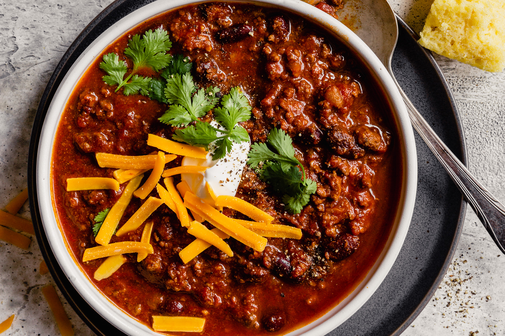

Best Chili

The full recipe
Chili season is upon us. That means it's time to dust off your favorite chili recipe and grab your cherished
chili pot.
But before you get too deep into prep, consider adding one of our six secret ingredients; each
capable of transforming any bowl of ho-hum chili into something magnificent. And don't expect anything exotic
(we would never do that to you). Instead, our secret ingredients are items you likely already have in your
kitchen.
Ingredients
- Canned Puréed Pumpkin
- Cocoa Powder
- Coffee
- Maple Syrup
- Pepperoncinis (Plus Liquid)
Recipe
- Heat olive in a large soup pot.
- Add chopped onion and cook for 5 minutes.
- Add ground beef and break it apart with a wooden spoon.
- Cook for 6-7 minutes.
- Add chili powder, cumin, sugar, tomato paste, garlic powder, salt, pepper, and optional cayenne.
- Stir until well combined.
- Add diced tomatoes, kidney beans, beef broth, and tomato sauce.
- Stir well.
- Simmer for 20-25 minutes.
- Let the chili rest for 5-10 minutes before serving.